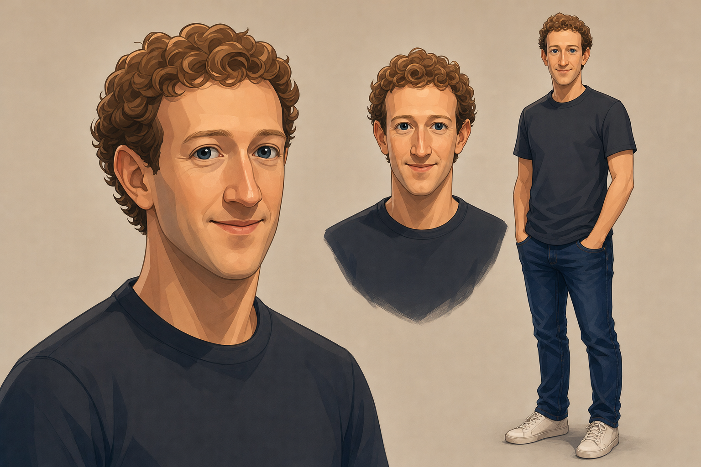

San Theft Auto / Character workshop
Mark, from concept to character.
Start with the face. Compare the approved cartoon direction with the actual exported head and shoulders.
Concept reference
Approved direction
Look for the same calm expression, recognizable face, grouped curls, and natural shoulders. The illustration sets the target; the model shows what is actually built.
Head & shoulders prototype
3D · In reviewLoading the exported Mark prototype…
Drag to rotate · Scroll or pinch to zoom · Arrow keys to turnDownload model